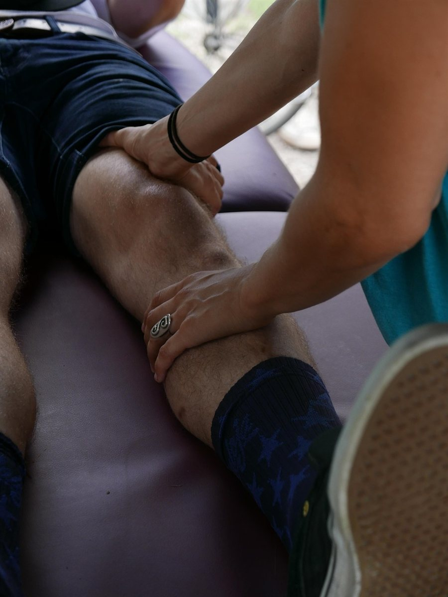
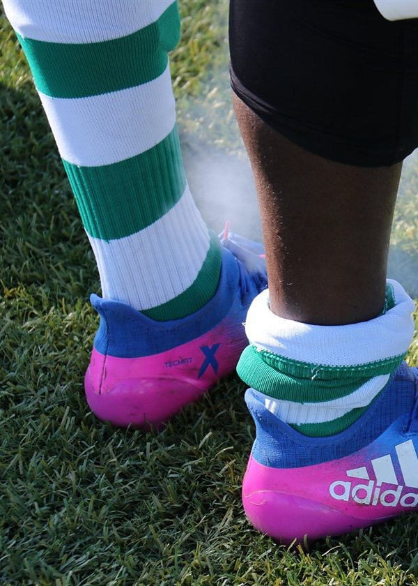
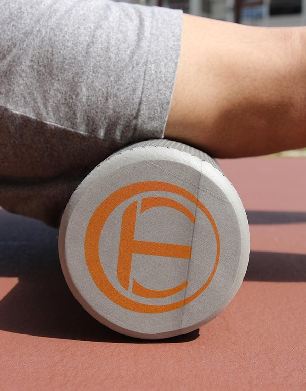
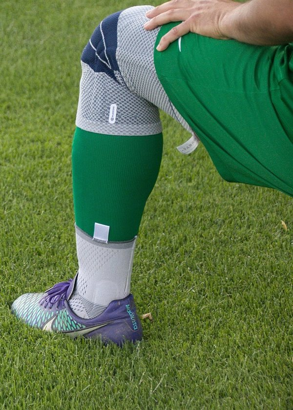
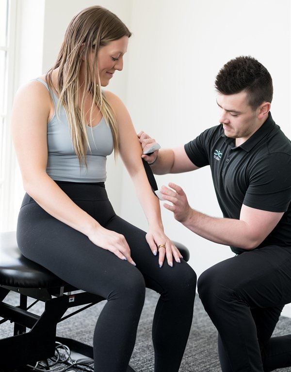
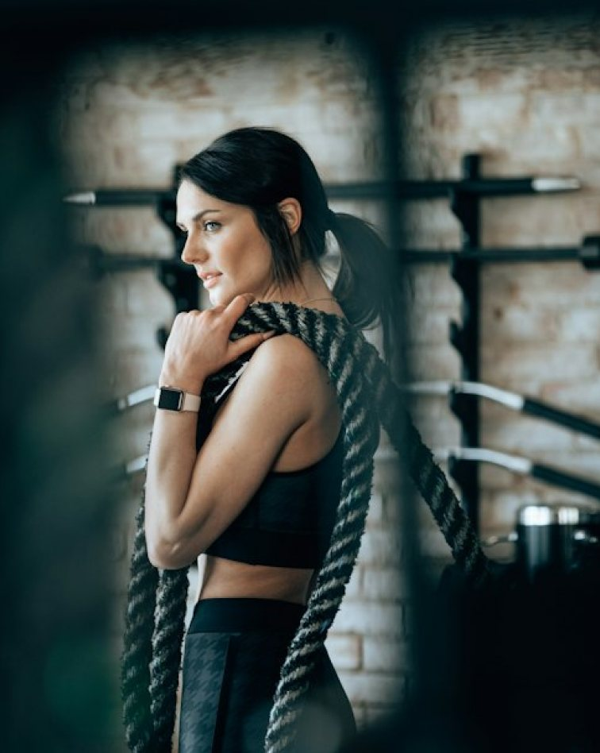
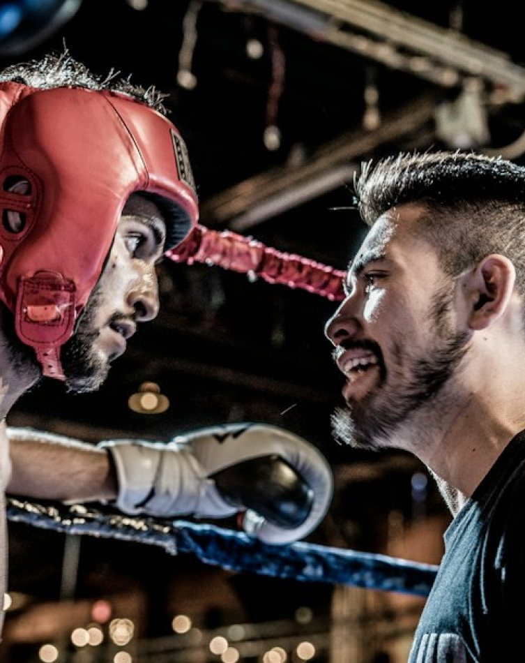
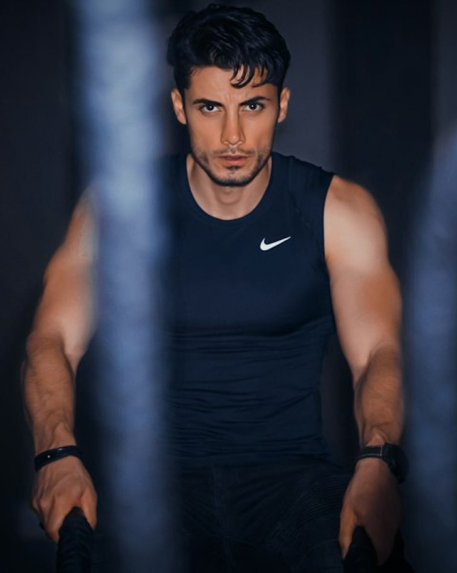
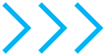

Fisioterapia esportiva
Tratamento de lesões musculares, articulares e ligamentares com foco no retorno seguro à modalidade.
Fisioterapia esportiva e de reabilitação integrada ao treino. Avaliamos, tratamos e prevenimos lesões para que você e o seu atleta voltem a se mover com segurança e confiança.

Áreas de atuação
Tratamento de lesões musculares, articulares e ligamentares com foco no retorno seguro à modalidade.
Protocolos progressivos para recuperar força, mobilidade e confiança depois de uma cirurgia.
Avaliação de movimento e correção de assimetrias antes que elas virem problema.
Alívio de dores recorrentes e reeducação postural para o dia a dia e para o treino.




Integrada ao treino
Na Playmakerz a fisioterapia não acontece isolada: ela conversa com o plano de treino do One to One e do PKZ. O que foi tratado hoje orienta o que será treinado amanhã.
Como funciona
Conversa sobre o histórico e testes de movimento, força e mobilidade.
Objetivos e prazos definidos junto com você, sob medida para o seu caso.
Terapia manual, exercícios e recursos de recuperação, com registro de cada sessão.
Retorno gradual ao treino e um plano para evitar que a lesão volte.
Nossa equipe



Depoimentos
“Depois da cirurgia no joelho achei que não voltaria a treinar. O plano foi gradual e hoje estou melhor do que antes.”
“O mais legal é que o fisio e o professor trocam informação. Meu treino se adaptou na mesma semana.”
“Meu filho voltou a jogar sem medo depois da lesão no tornozelo, e ainda aprendeu a se prevenir.”
Perguntas frequentes
Não. A fisioterapia atende também quem não treina na Playmakerz. Para alunos, a vantagem é a integração direta com o plano de treino.
É uma avaliação com conversa sobre o seu histórico e testes de movimento. Ao final você sai com um plano de tratamento e uma previsão de prazos.
Sim. Atendemos os atletas do PKZ Lab e outros jovens esportistas, com acompanhamento próximo dos responsáveis.
Os valores dependem do tratamento e do número de sessões. Veja os planos e fale com a gente para montar o ideal para o seu caso.

Agende uma avaliação e comece o seu plano de recuperação e prevenção.